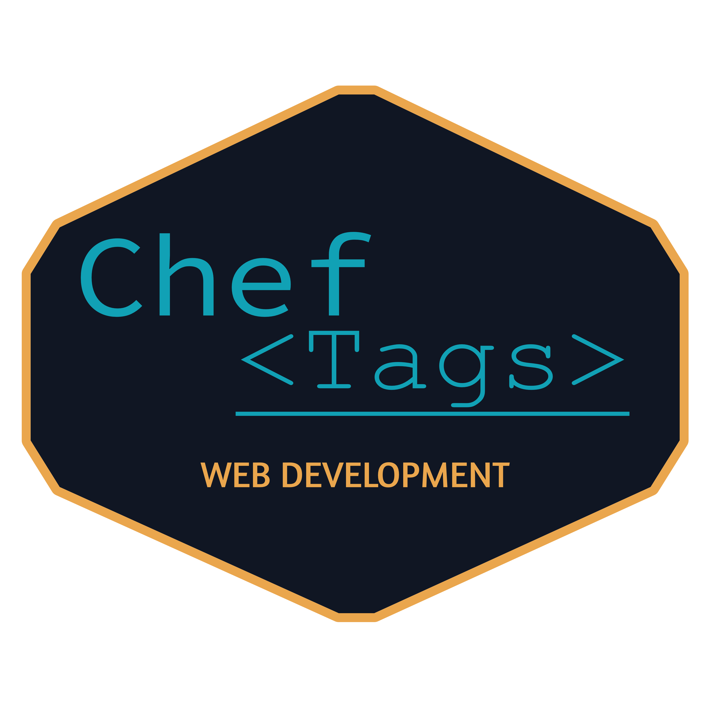
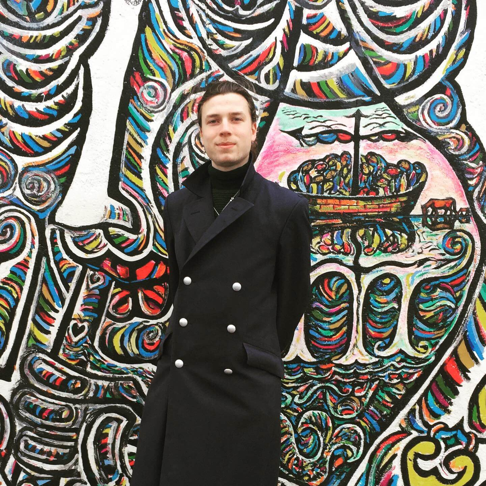
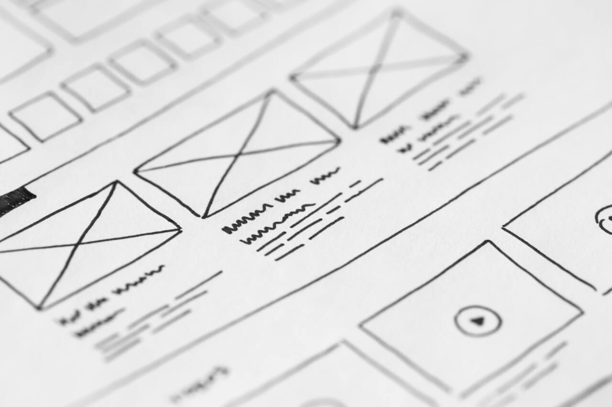

Welkom!

Wie ben ik?
Hallo ik ben Daan, student Creative Media & Game Technologies. Ik wordt opgeleid tot creatieve technoloog, iemand die technisch ingesteld is maar niet bang is om buiten de lijntjes te kleuren. Op mijn studie leer ik vanuit het perspectief van de gebruiker te denken, kennis die ik toepas op het ontwikkelen van websites en online systemen.
Creatief ben ik niet alleen in het maken van websites. Als hobby maak ik korte filmpjes, gebruik ik photoshop en maak tekeningen en posters, vaak als ondersteuning voor projecten.

Wat doe ik?
webdevelopment
Hoe gaat een website ontwikkelen in zijn werk? Dat ligt aan het doel van je website. Weet je nog niet zeker wat je wilt? Geen zorgen ook daar kan ik je mee helpen. Na het eerste contact spreek ik graag af om face-to-face het over de website te hebben. Ik geef advies over wat je met een website kan doen en wat voor jou toepasbaar is. Van een ‘visitekaartje website’ tot webservices met een database erachter, ik kan het maken.
Met het doel in zicht begin ik aan een eerste ontwerp. Dit kan een voorbeeld zijn van hoe de website er uit gaat zien of een technisch diagram om het process inzichtelijk te maken. Met goedkeuring ga ik door met de volgende stap: het programmeren. Tijdens het programmeren houd ik je op de hoogte van de voortgang en probeer ik zo veel mogelijk te laten zien zodat er altijd bijgestuurd kan worden en de website naar wens zal zijn.
Hosting & Beheer
Heb je geen zin in het zoeken van een goede hosting service of heeft u zelf de kennis niet om je website aan te passen en te beheren? Dan neem ik graag deze taken jou uit handen. Ik regel de hosting en pas voor jou de website aan als je ontevreden bent met tekst of afbeeldingen. Ik neem ook contact op met het hostingbedrijf als er iets mis gaat. Allemaal voor een vast bedrag per de maand.

portfolio
Contact
- Email: d.meijs@cheftags.nl
- Mobiel: +31 634146579